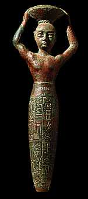

|
Ur-Nammu was the governor of Ur. He united all the cities of Sumer into an empire and became its ruler.
His son Shulgi introduced a calendar and weight system to be used by the whole empire. A list of Shulgi's laws has been discovered by archaeologists. Unlike most kings of Mesopotamia, Shulgi and the kings that came after him claimed to be gods and even had temples dedicated to themselves. |

Ur-Nammu shown carrying basket of earth. |